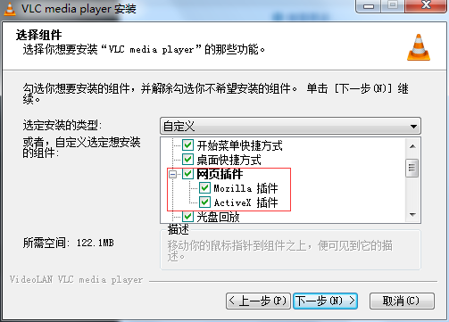
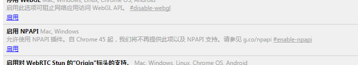

模板下载
| 人物导入模板 | ||
| 人物导入模板 | 本地下载 | |
| 摄像头导入模板 | ||
| 摄像头导入模板 | 本地下载 | |
下载插件VLC插件下载
| Window | ||
| VLC插件(32位) | 本地下载 | 远程下载 |
| Mac | ||
| VLC插件 | 本地下载 | 远程下载 |
如何安装
主流浏览器，暂不支持Google Chrome浏览器。
安装步骤：下载最新的VLC for Windows的安装包，双击安装包，在选择网页插件处勾选“Mozilla插件”和“ActiveX插件”，如下图所示：
Safari
下载VLC web Plugin插件，双击dmg，拖动插件到Internet Plug-Ins文件夹，将浏览器重启，无其他设置。插件下载地址:
插件下载
Chrome
同Safari下载安装VLC插件。
1.Chrome版本在41之前：直接在地址栏chrome://plugins/找到相应的插件，勾上“总是允许”重启浏览器即可。
2.Chrome版本在42~45：地址栏输入：chrome://flags/，如下图，点击“启用”NPAPI插件。
然后在地址栏输入：chrome://plugins/找到相应的插件，勾上“总是允许”重启浏览器即可。
3.Chrome版本在46以后：不在支持VLC,请更换浏览器
FireFox
同Safari浏览器，无需更多设置。
QQ浏览器
不支持VLC插件。
兼容性问题
| 游览器 | Windows | Mac |
| IE | ||
| Chrome 41~45 | ||
| Chrome 46 以后 | ||
| Safari | ||
| Firefox | ||
| 360安全浏览器 | ||
| 猎豹浏览器 | ||
| QQ浏览器 | ||
| 搜狗浏览器 |